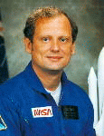

Lyndon B. Johnson Space Center
Houston, Texas 77058
|
National Aeronautics and Space Administration Lyndon B. Johnson Space Center Houston, Texas 77058 |
 |
Biographical Data |
||
NORMAN E. THAGARD (M.D.)
NASA ASTRONAUT (FORMER)
PERSONAL DATA: Born July 3, 1943, in Marianna, Florida, but considers Jacksonville, Florida, to be his hometown. Married to the former Rex Kirby Johnson of South Ponte Vedra Beach, Florida. They have three sons. During his free time, he enjoys classical music, and electronic design. Dr. Thagard has published articles on digital and analog electronic design. His mother, Mrs. Mary F. Nicholson, is a resident of St. Peterburg, Florida. His father, Mr. James E. Thagard, is deceased. Her mother, Mrs. Rex Johnson, resides in Tallahassee, Florida.
EDUCATION: Graduated from Paxon Senior High School, Jacksonville, Florida, in 1961; attended Florida State University where he received bachelor and master of science degrees in engineering science in 1965 and 1966, respectively, and subsequently performed pre-med course work; received a doctor of medicine degree from the University of Texas Southwestern Medical School in 1977.
ORGANIZATIONS: Member, American Institute of Aeronautics and Astronautics, Aerospace Medical Association, and Phi Kappa Phi.
SPECIAL HONORS: Awarded 11 Air Medals, the Navy Commendation Medal with Combat "V", the Marine Corps "E" Award, the Vietnam Service Medal, and the Vietnamese Cross of Gallantry with Palm.
EXPERIENCE: Dr. Thagard held a number of research and teaching posts while completing the academic requirements for various earned degrees.
In September 1966, he entered active duty with the United States Marine Corps Reserve. He achieved the rank of Captain in 1967, was designated a naval aviator in 1968, and was subsequently assigned to duty flying F-4s with VMFA-333 at Marine Corps Air Station, Beaufort, South Carolina. He flew 163 combat missions in Vietnam while assigned to VMFA-115 from January 1969 to 1970. He returned to the United States and an assignment as aviation weapons division officer with VMFA-251 at the Marine Corps Air Station, Beaufort, South Carolina.
Thagard resumed his academic studies in 1971, pursuing additional studies in electrical engineering, and a degree in medicine; prior to coming to NASA, he was interning in the Department of Internal Medicine at the Medical University of South Carolina. He is a licensed physician.
He is a pilot and has logged over 2,200 hours flying time--the majority in jet aircraft.
NASA EXPERIENCE: Dr. Thagard was selected as an astronaut candidate by NASA in January 1978. In August 1979, he completed a one-year training and evaluation period, making him eligible for assignment as a mission specialist on future Space Shuttle flights. A veteran of five space flights, he has logged over 140 days in space. He was a mission specialist on on STS-7 in 1983, STS 51-B in 1985, STS-30 in 1989, was the payload commander on STS-42 in 1992, and was the cosmonaut/researcher on the Russian Mir 18 mission in 1995.
Dr. Thagard first flew on the crew of STS-7, which launched from Kennedy Space Center, Florida, on June 8, 1983. This was the second flight for the Orbiter Challenger and the first mission with a crew of five persons. During the mission, the STS-7 crew deployed satellites for Canada (ANIK C-2) and Indonesia (PALAPA B-1); operated the Canadian-built Remote Manipulator System (RMS) to perform the first deployment and retrieval exercise with the Shuttle Pallet Satellite (SPAS-01); conducted the first formation flying of the Orbiter with a free-flying satellite (SPAS-01); carried and operated the first U.S./German cooperative materials science payload (OSTA-2); and operated the Continuous Flow Electrophoresis System (CFES) and the Monodisperse Latex Reactor (MLR) experiments, in addition to activating seven “Getaway Specials.” During the flight Dr. Thagard conducted various medical tests and collected data on physiological changes associated with astronaut adaptation to space. He also retrieved the rotating SPAS-01 using the RMS. Mission duration was 147 hours before landing at Edwards Air Force Base, California, on June 24, 1983.
Dr. Thagard then flew on STS 51-B, the Spacelab-3 science mission, which launched from Kennedy Space Center, Florida, on April 29, 1985, aboard the Challenger. He assisted the commander and pilot on ascent and entry. Mission duration was 168 hours. Duties on orbit included satellite deployment operation with the NUSAT satellite as well as animal care for the 24 rats and two squirrel monkeys contained in the Research Animal Holding Facility (RAHF). Other duties were operation of the Geophysical Fluid Flow Cell (GFFC), Urinary Monitoring System (UMS), and the Ionization States of Solar and Galactic Cosmic Ray Heavy Nuclei (IONS) experiment. After 110 orbits of the Earth, Challenger landed at Edwards Air Force Base, California, on May 6, 1985.
He next served on the crew of STS-30, which launched from Kennedy Space Center, Florida, on May 4, 1989, aboard the Orbiter Atlantis. During this four-day mission, crew members successfully deployed the Magellan Venus-exploration spacecraft, the first U.S. planetary science mission launched since 1978, and the first planetary probe to be deployed from the Shuttle. Magellan is scheduled to arrive at Venus in mid-1990 and will map the entire surface of Venus for the first time, using specialized radar instruments. In addition, crew members also worked on secondary payloads involving fluid research in general, chemistry and electrical storm studies. Mission duration was 97 hours. Following 64 orbits of the Earth, the STS-30 mission concluded with a landing at Edwards Air Force Base, California, on May 8, 1989.
Dr. Thagard served as payload commander on STS-42, aboard the Shuttle Discovery, which lifted off from the Kennedy Space Center, Florida, on January 22, 1992. Fifty five major experiments conducted in the International Microgravity Laboratory-1 module were provided by investigators from eleven countries, and represented a broad spectrum of scientific disciplines. During 128 orbits of the Earth, the STS-42 crew accomplished the mission’s primary objective of investigating the effects of microgravity on materials processing and life sciences. In this unique laboratory in space, crew members worked around-the-clock in two shifts. Experiments investigated the microgravity effects on the growth of protein and semiconductor crystals. Biological experiments on the effects of zero gravity on plants, tissues, bacteria, insects and human vestibular response were also conducted. This eight-day mission culminated in a landing at Edwards Air Force Base, California, on January 30, 1992.
Most recently, Dr. Thagard was the cosmonaut/researcher for the Russian Mir 18 mission. Twenty eight experiments were conducted in the course of the 115 day flight. Liftoff was from the Baikonur Cosmodrome in Kazakstan on March 14, 1995. The mission culminated in a landing at the Kennedy Space Center in the Space Shuttle Atlantis on July 7, 1995.
With the completion of his fifth mission, Dr. Thagard has logged over 140 days in space.
Dr. Thagard retired from NASA in December 1995 and returned to his alma mater, Florida State University to take the position of Visiting Professor and Director of External Relations for the Florida A&M University - Florida State University College of Engineering, Tallahassee.
FEBRUARY 1996
This is the only version available from NASA. Updates must be sought direct from the above named individual
{kind=link}